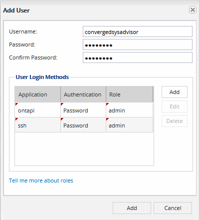
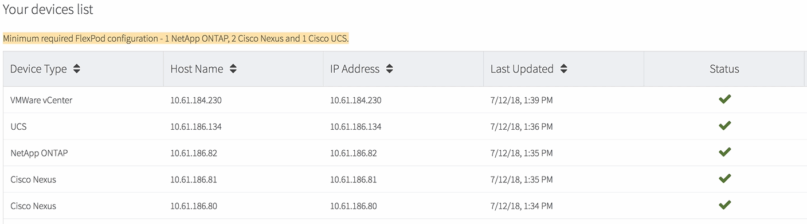
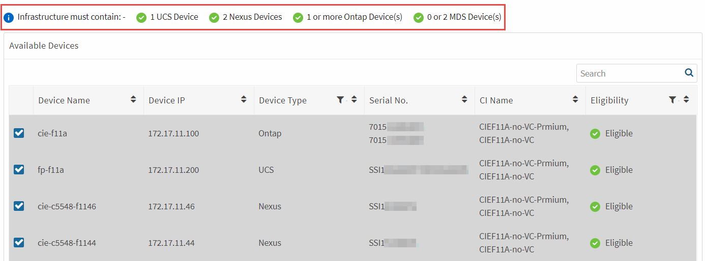
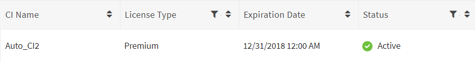
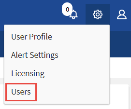

Getting started with Converged Systems Advisor for customers Edit on GitHub Request doc changes
To get started with Converged Systems Advisor, you must prepare your environment, install and set up the agent, and add a converged infrastructure to the portal.
You might want to learn how Converged Systems Advisor works before you get started.
Preparing your environment
Preparing your environment includes verifying support for your configuration, creating accounts for the agent, and registering for a NetApp Support Site account.
-
Verify support in the NetApp Interoperability Matrix Tool:
-
Verify that Converged Systems Advisor supports your FlexPod converged infrastructure.
-
Verify that you have a supported VMware ESXi server for the Converged Systems Advisor agent.
To minimize bandwidth usage, NetApp recommends installing the agent in the same data center as the FlexPod converged infrastructure.
-
-
Ensure that the network in which you install the agent allows connectivity to the required endpoints:
-
The agent must have connectivity to each FlexPod component so it can collect configuration data.
-
The agent also requires an outbound internet connection to communicate with the Converged Systems Advisor portal (csa.netapp.com).
-
-
Create accounts on each FlexPod component.
The agent requires credentials to collect configuration data. You must provide the credentials when you configure the agent.
-
Go to the NetApp Support Site and register for an account, if you do not have one.
A NetApp Support Site account is required to configure the agent and to access the portal.
Creating accounts on FlexPod devices
You must set up a read-only account in Cisco UCS Manager and on your Cisco Nexus switches. An admin account is required for ONTAP systems. The agent uses these accounts to collect configuration data from each device.
-
Create a read-only account for Cisco UCS Manager:
-
Log in to Cisco UCS Manager.
-
Create a locally authenticated user named csa-readonly.
All new users are read-only by default.
-
-
Create a read-only account for your Nexus switches:
-
Log in to each Nexus switch using SSH or telnet.
-
Enter global configuration mode:
configure terminal
-
Create a new user:
username [name] password [password] role [role]
-
Save the configuration:
copy running configuration startup configuration
-
-
Create an admin account for ONTAP:
-
Log in to OnCommand System Manager and click the settings icon:
.
-
On the Users page, click Add.
-
Enter a user name and password and add ssh and ontapi as user login methods with admin access.

-
Deploying the agent
You must deploy the Converged Systems Advisor agent on a VMware ESXi server. The agent collects configuration data about each device in your FlexPod converged infrastructure and sends that data to the Converged Systems Advisor portal.
Downloading and installing the agent
You must deploy the Converged Systems Advisor agent on a VMware ESXi server.
To minimize bandwidth usage, you should install the agent on a VMware ESXi server that is in the same data center as the FlexPod configuration. The agent must have connectivity to each FlexPod component and to the internet so it can send configuration data to the Converged Systems Advisor portal using HTTPS port 443.
The agent is deployed as a VMware vSphere virtual machine from an Open Virtualization Format (OVF) template. The template is Debian-based with 1 vCPU and 2 GB of RAM (more may be needed for multiple or larger FlexPod systems).
-
Download the agent:
-
Log in to the Converged Systems Advisor portal.
-
Click Download Agent.
-
-
Install the agent by deploying the OVF template on the VMware ESXi server.
Setting up networking for the agent
You must ensure that networking is set up correctly on the agent virtual machine to enable communication between the agent and FlexPod devices and between the agent and csa.netapp.com.
-
Log in to the agent’s virtual machine console.
The default user name is
csaand the default password isnetapp. You should change the default password after you log in. -
If DHCP is not available in the subnet, configure a static IP address and DNS settings using standard Debian tools, and then reboot the agent.
The network configuration for the Debian virtual machine defaults to DHCP. NetworkManager is installed and provides a text user interface that you can start from the command nmtui (see the man page for more details).
For additional help with networking, see the network configuration page on the Debian wiki.
-
If your security policies dictate that the agent must be on one network to communicate with FlexPod devices and another network to communicate with the internet, add a second network interface in VCenter and configure the correct VLANs and IP addresses.
-
If a proxy server is required for internet access, configure the virtual machine to use the proxy by setting the http_proxy environment variable.
Example
The following steps configure the virtual machine to use an HTTP proxy running on 192.168.10.10 and port 3128.
-
Add
/etc/profile.d/proxy.shwith the following contents:export http_proxy=http://192.168.10.10:3128
-
Add
/etc/apt/apt.conf.d/99HttpProxywith the following contents:Acquire::http::Proxy "http://192.168.10.10:3128";
-
Edit
/etc/wgetrcby adding the following:http_proxy = http://192.168.10.10:3128
-
-
Verify connectivity by running the following CLI command from the agent:
curl -k https://www.netapp.com/us/index.aspx
If the command fails, verify DNS settings. The agent virtual machine must have a valid DNS configuration and the ability to reach csa.netapp.com.
Installing an SSL certificate on the agent
The agent creates a self-signed certificate when the virtual machine boots for the first time. If required, you can delete that certificate and use your own SSL certificate.
Converged Systems Advisor supports the following:
-
Any cipher compatible with OpenSSL version 1.0.1 or greater
-
TLS 1.1 and TLS 1.2
-
Log in to the agent’s virtual machine console.
-
Navigate to
/opt/csa/cert -
Delete the self-signed certificate that the agent created.
-
Paste your SSL certificate.
-
Restart the virtual machine.
Configuring the agent to discover your FlexPod infrastructure
You must configure the agent to collect configuration data from each device in your FlexPod converged infrastructure.
-
Open a web browser and enter the IP address of the agent virtual machine.
-
Log in to the agent by entering the user name and password of your NetApp Support Site account.
-
Add the FlexPod devices that you want the agent to discover:
-
Click Add a device.
-
Select a device type.
-
Enter the IP address or host name of the device.
-
Enter the user name and password of the account that you previously created for this device.
If your UCS environment has LDAP user management configured, then you must add the user’s domain before the user name. For example: local\csa-readonly
-
Click Add device.
The Status column identifies how far along the agent is in the discovery process. The column displays a checkmark when discovery is complete.
-
-
Repeat the steps for all other devices in the FlexPod converged infrastructure.
Each device in the FlexPod infrastructure should display in the table with a checkmark.

Adding an infrastructure to the portal
After you configure the agent, it sends information about each FlexPod device to the Converged Systems Advisor portal. You must now select each of those components in the portal to create an entire infrastructure that you can monitor.
-
In the Converged Systems Advisor portal, click Add Infrastructure.
-
Add basic details about the infrastructure: a name, your company name, and the location of the system.
-
In the Available Devices table, select each device that is part of the FlexPod configuration.
When you select a device, the Eligibility column displays either Eligible or Not Eligible. A device is not eligible if it was discovered by a different agent. Once you have selected the required components, you should see a green checkmark next to each type of device.

-
Click Add System and then click OK in the confirmation dialog box.
-
When prompted, add your Converged Systems Advisor license to unlock key functionality:
-
Enter the license key.
-
Review and accept the terms of the End User License Agreement.
-
Click Submit.
The Status column should now display that the license for the converged infrastructure is active.

-
Converged Systems Advisor adds the infrastructure to the portal and starts collecting configuration data about each device. Wait a few minutes for the agent to collect information from the devices.
Sharing an infrastructure with other users
Sharing a converged infrastructure enables another person to log in to the Converged Systems Advisor portal so they can view and monitor the configuration. The person who you share the infrastructure with must have a NetApp Support Site account.
-
In the Converged Systems Advisor portal, click the Settings icon, and then click Users.

-
Select the configuration from the User table.
-
Click the icon.
-
Enter one or more email addresses next to the user role that you want to provide.
You can enter multiple email addresses in a single field by pressing Enter after the first email address. -
Click Send.
The user should receive an email that contains instructions for accessing Converged Systems Advisor.
Configuring notifications
If you have a Premium license, Converged Systems Advisor can alert you about changes to your FlexPod infrastructure through email notifications.
-
In the Converged Systems Advisor portal, click the Settings icon, and then click Alert Settings.
-
Check the notification that you would like to receive for each converged infrastructure that has a Premium license.
Each notification includes the following information:
Collection Failures Alerts you when Converged Systems Advisor cannot collect data from a converged infrastructure.
Offline Agent Alerts you when a Converged Systems Advisor agent is not online.
Daily Alert Digest Alerts you about failed rules that occurred on the previous day.
-
Click Save.
Converged Systems Advisor will now send email notifications to the users associated with the converged infrastructure.